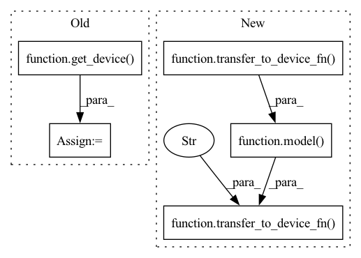

Pattern ID :27672
Before Change
def measure_allocated_memory(model, sample, print_details=False):
model_device = get_device( model)
assert model_device.type == "cuda"
torch.cuda.reset_peak_memory_stats(device=model_device)
pre_mem = torch.cuda.memory_allocated(device=model_device)After Change
torch.cuda.reset_peak_memory_stats(device=model_device)
pre_mem = torch.cuda.memory_allocated(device=model_device)
transfer_to_device_fn(
model( transfer_to_device_fn( sample, model_device)) ,
"cpu" ,
)
if print_details:
logger.info(torch.cuda.memory_summary(device=model_device, abbreviated=True))
In pattern: SUPERPATTERN
Frequency: 3
Non-data size: 5
Instances Fragment ID: 82101708
Project Name: lukashedegaard/pytorch-benchmark
Commit Name: 16ca37984744f4adb1c9a75bb64dde6de261a1dc
Time: 2022-02-11
Author: lh@eng.au.dk
File Name: pytorch_benchmark/benchmark.py
M Class Name: AnonimousClass
N Class Name: AnonimousClass
M Method Name: measure_allocated_memory(5)
N Method Name: measure_allocated_memory(3)
M Parent Class:
N Parent Class:
M File Name: pytorch_benchmark/benchmark.py
N File Name: pytorch_benchmark/benchmark.py
M Start Line: 65
M End Line: 71
N Start Line: 74
N End Line: 86
Before Change
def warm_up(model, sample, num_runs=10):
model_device = get_device( model)
batch_size = sample.shape[0]
for _ in tqdm(range(num_runs), desc=f"Warming up with batch_size={batch_size}"):
model(sample.to(device=model_device)).to(device="cpu")
After Change
batch_size: int = None,
):
for _ in tqdm(range(num_runs), desc=f"Warming up with batch_size={batch_size}"):
transfer_to_device_fn(
model( transfer_to_device_fn( sample, model_device)) ,
"cpu" ,
)
def measure_detailed_inference_timing(
model, sample, model_device, transfer_to_device_fn=torch.Tensor.to Fragment ID: 82101709
Project Name: lukashedegaard/pytorch-benchmark
Commit Name: 16ca37984744f4adb1c9a75bb64dde6de261a1dc
Time: 2022-02-11
Author: lh@eng.au.dk
File Name: pytorch_benchmark/benchmark.py
M Class Name: AnonimousClass
N Class Name: AnonimousClass
M Method Name: warm_up(6)
N Method Name: warm_up(3)
M Parent Class:
N Parent Class:
M File Name: pytorch_benchmark/benchmark.py
N File Name: pytorch_benchmark/benchmark.py
M Start Line: 82
M End Line: 86
N Start Line: 98
N End Line: 109
Before Change
def measure_detailed_inference_timing(model, sample):
model_device = get_device( model)
try:
with torch.no_grad(), torch.autograd.profiler.profile(
use_cuda=(model_device.type == "cuda"), profile_memory=TrueAfter Change
with torch.no_grad(), torch.autograd.profiler.profile(
use_cuda=(model_device.type == "cuda"), profile_memory=True
) as prof:
transfer_to_device_fn(
model( transfer_to_device_fn( sample, model_device)) ,
"cpu" ,
)
detailed_timing = prof.key_averages().table(sort_by="self_cpu_time_total")
logger.info(detailed_timing)
Fragment ID: 82101710
Project Name: lukashedegaard/pytorch-benchmark
Commit Name: 16ca37984744f4adb1c9a75bb64dde6de261a1dc
Time: 2022-02-11
Author: lh@eng.au.dk
File Name: pytorch_benchmark/benchmark.py
M Class Name: AnonimousClass
N Class Name: AnonimousClass
M Method Name: measure_detailed_inference_timing(4)
N Method Name: measure_detailed_inference_timing(2)
M Parent Class:
N Parent Class:
M File Name: pytorch_benchmark/benchmark.py
N File Name: pytorch_benchmark/benchmark.py
M Start Line: 89
M End Line: 96
N Start Line: 113
N End Line: 123